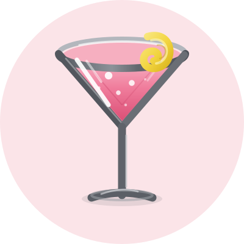
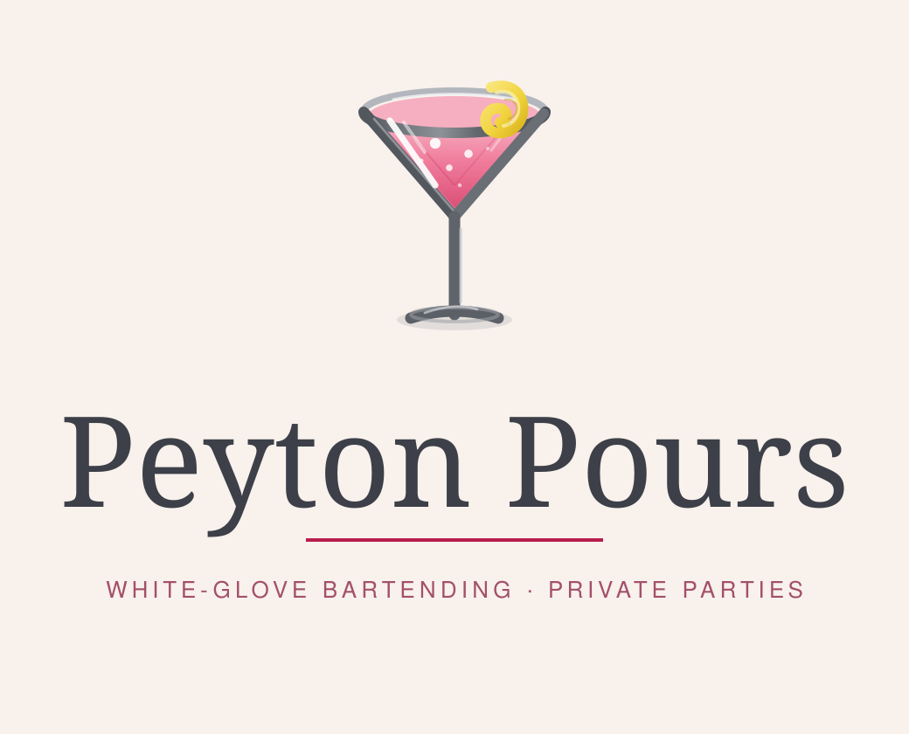
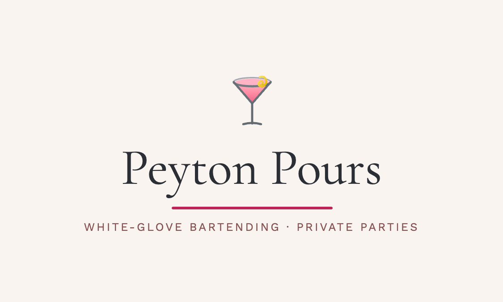
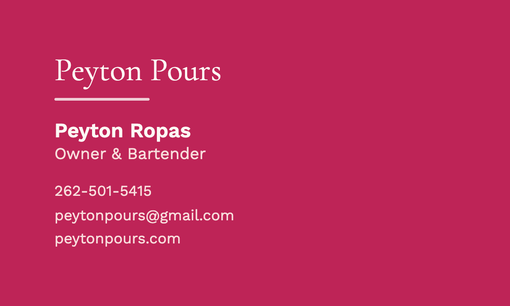
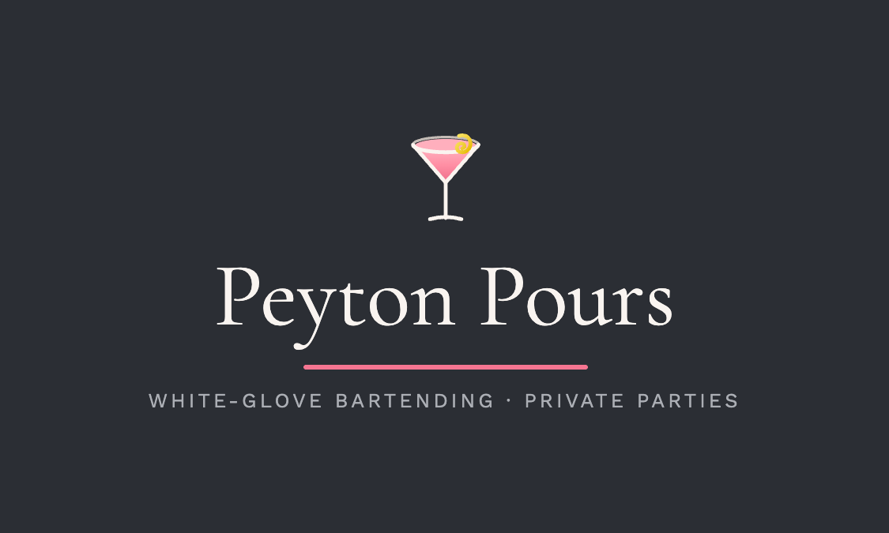
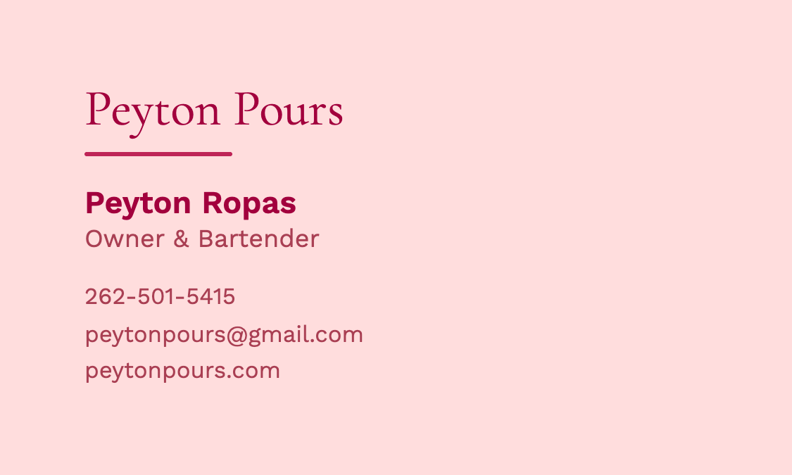
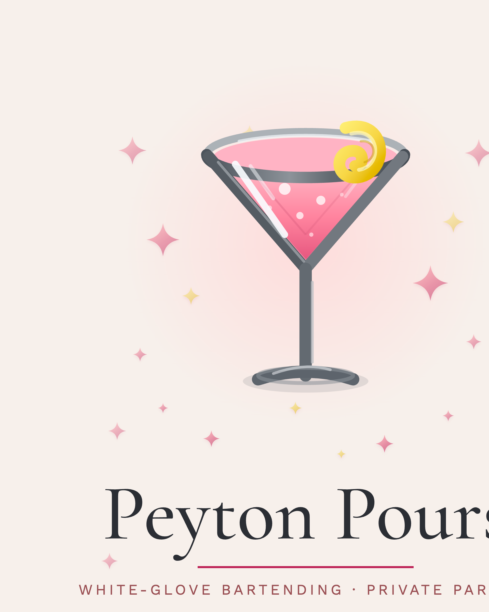

Peyton Pours
White-Glove Bartending · Private Parties
A complete identity for a private-event bartending service in Wisconsin's Lake Country — warm, feminine and detail-driven, built to feel at home at a lake-house party without losing polish.
A complete identity for a private-event bartending service in Wisconsin's Lake Country — warm, feminine and detail-driven, built to feel at home at a lake-house party without losing polish.
Logo suite


A cool grey glass holds a warm pink pour with a lemon twist — the one deliberate note of contrast in an otherwise pink-on-pink palette. Highlights, bubbles and a back rim keep it dimensional without turning illustrative.
Palette
Typography
Poured to Perfection
Thoughtful, detail-driven bar service for private parties, showers, and lake house gatherings.
White-Glove Bartending · Private Parties
Collateral




Two themes — cream front with a pink back, and charcoal front with a blush back — printed at 300 DPI with bleed.
Collateral

An 8×10 framed sign for the bar at events — promotion that reads as decor.
Digital
A single page whose only job is to collect event inquiries: the mark, one line of positioning, and a short form. Live at peytonpours.com.
Files in this kit